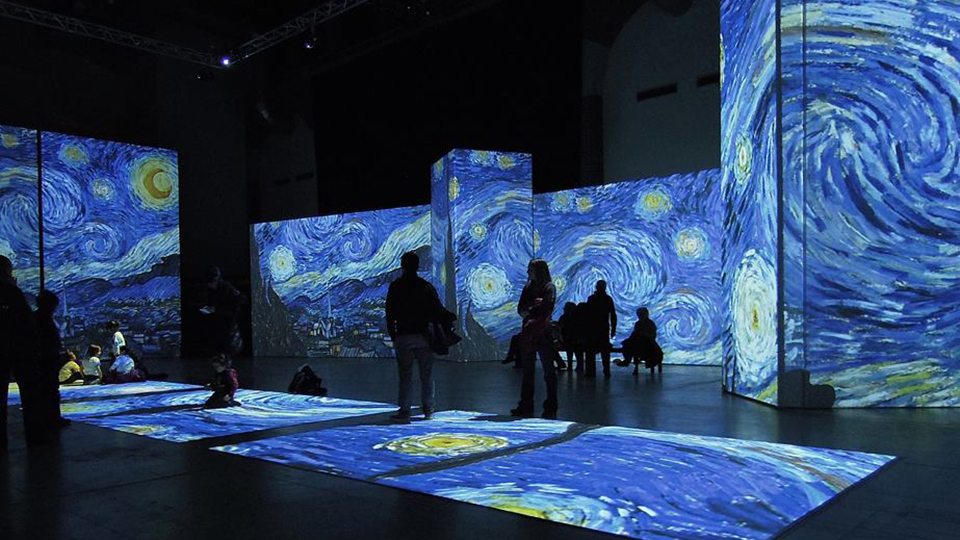
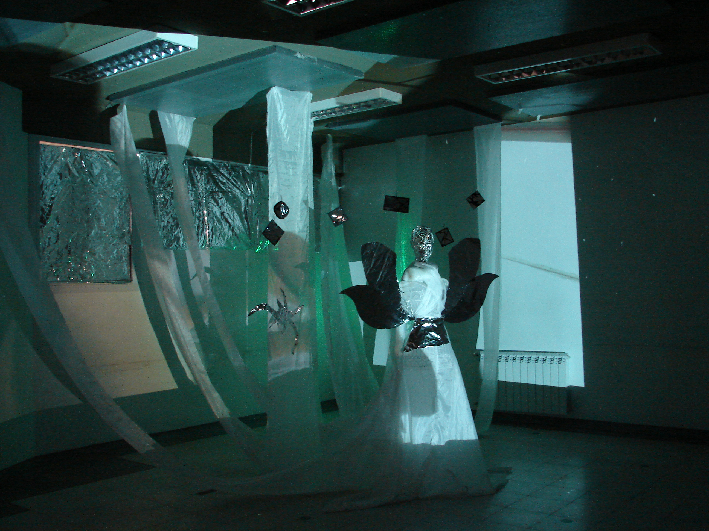

¿Qué es una instalación?

En las artes visuales una instalación se refiere a la intervención de un espacio mediante diversas materialidades y recursos. No se limita a los lenguajes tradicionales como la pintura, el dibujo o la escultura y emplea variadas expresiones con fin de apropiarse de un espacio, mayoritariamente interior (Galerías, museos, espacios culturales).

Una instalación de arte multimedia es una obra de arte que combina tecnología y medios como audio, video, luces y movimiento para crear una experiencia interactiva con el espectador
Las instalaciones de arte multimedia son un tipo de arte contemporáneo que se caracteriza por la experimentación y la idea de que la obra es más importante que sus aspectos formales.
Nuestras instalaciones
Hasta el momento hemos experimentado principalmente en el área de las artes visuales con dispositivos obsoletos, como teles de tubo, videocaseteras y cámaras de video Hi-8 en combinación con medios programables, como Processing y Touch Designer, y/o dispositivos electrónicos creados por nosotros, como la Dirty Mixer, para crear obras que logren ser interactivas y, al mismo tiempo, logren hacer resurgir aquellos objetos obsoletos para darles una nueva vida.
↓↓¡Vea nuestas instalaciones!↓↓
Referencias bibliográficas: